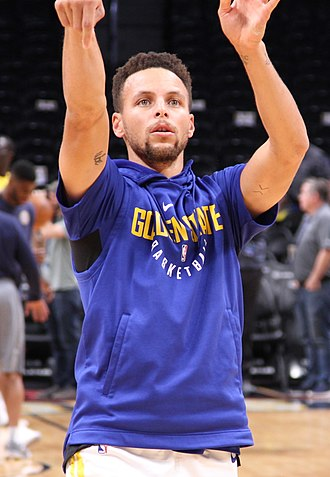

STEPHEN CURRY

Wardell Stephen "Steph" Curry II is an American professional basketball player for the Golden State Warriors of the National Basketball Association.
He plays the point guard position. Many analysts and players have called him the greatest shooter in NBA history.
Born: 14 March 1988 (age 33 years), Akron, Ohio, United States
Height: 1.91 m
Current team: Golden State Warriors (#30 / Point guard, Shooting guard)
Spouse: Ayesha Curry (m. 2011)
Salary: 4.02 crores USD (2020)
Children: Riley Elizabeth Curry, Canon W. Jack Curry, Ryan Carson Curry
Parents: Dell Curry, Sonya Curry